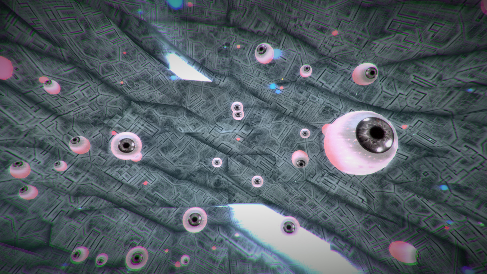
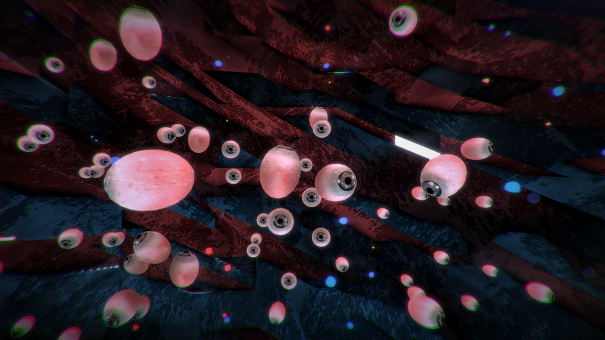
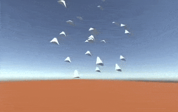
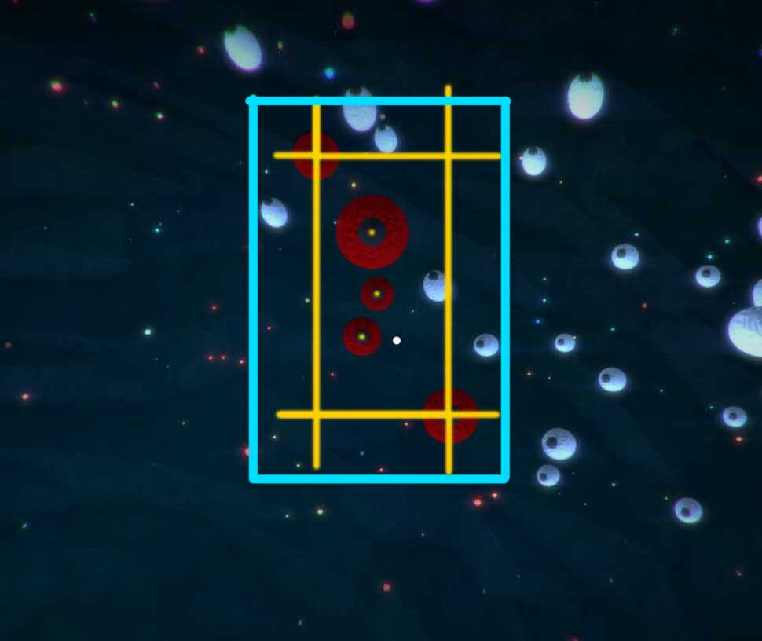
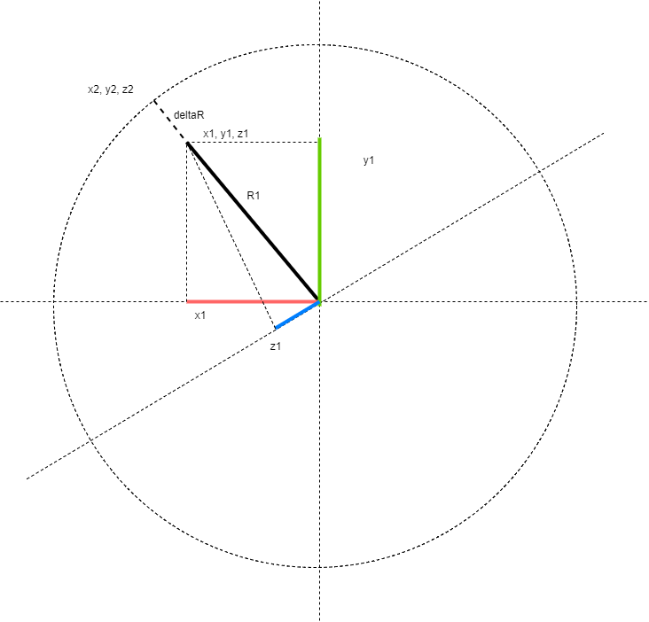
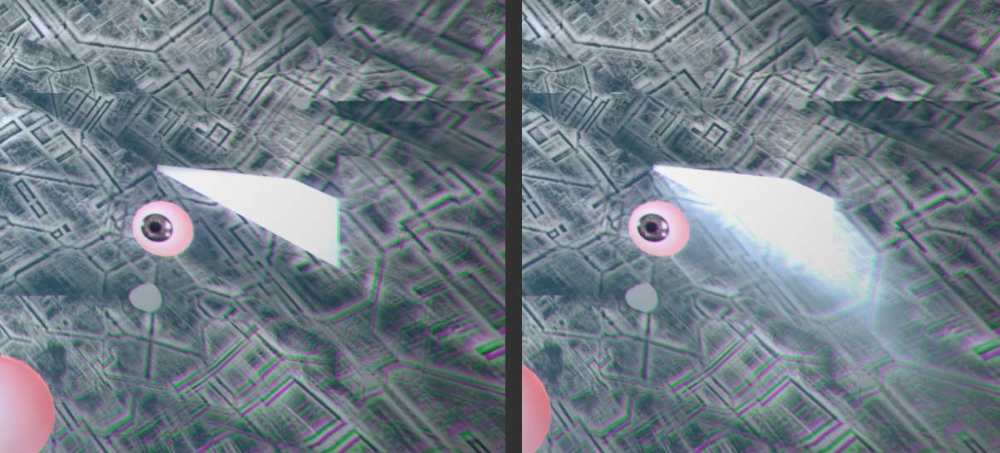

I've dabbled a bit in and out of art for the last one year. And although I have not made anything too impressive even as per my biased self evaluation I've had a lot of fun doing that. So when a client posted about their artistic vision needed be realized in virtual reality I was definitely interested.
Luis, a Peru based artist wanted an art concept to be made into VR for the HTC Vive. The piece was about conciousness and Quantum foam. It's represented using an erratic environment (which represents quantum foam) and eyes flocking like school of fish in air which stare back at you when you stare at them (I believe this is for conciousness).
Being for the Vive, the great thing was that a lot of heavy stuff can be put in the scene and the PC should not have a problem playing it. Here's what the end result looked like.

Light color sci-fi theme, the one we went with eventually.

Dark Color Theme
To break down the development process, the project mostly involved Boid algorithms, Mesh manipulation based on Perlin Noise and some particle effects and light shafts.
BOIDS
I first came across the concept of Boids in 2011 or so and never really used it until now. Much of the early work on them was done by Craig Reynolds for animation and motion pictures, like simulating bats and penguins in the 1987 Batman movie for which he was awarded by the Academy of Motion Picture Arts and Sciences. There's a lot of material on Boids and some good articles and papers can be found at his website red3d.com
For my project I decided to use Keijiro Takahashi's Boid project. There are other boid solutions for Unity but I went with this one because it was free and the author is well known in the Unity3D community for his great and reliable open source works.
To put shortly, Boids are an emergent form of behaviour. Meaning, the logic mostly resides in and functions at an individual level and several boids functioning together leads to a collective behaviour (emergence). With some rewriting of Takahashi's code, I was able to get the desired behaviour.

Standard flocking boid algorithm which I customised.
When the user looks at an eye for a certain number of seconds, the boid slows down and turns towards the camera. It also alerts some boids around it that do the same. Together they slowly float around their positions while they stare back at the user. They don't come to a complete stop, instead their velocity is simply determined by minor Perlin noise values for showing life-like behaviour. The rest of the group continues ahead.
As long as screen bounds of the boids along with some padding is at the center of the screen, they stay where they are.
If the user looks away for a while and the center of the screen is no longer in the rectangle bounds, the boids leave and join their group.

The red boids are the ones that are stationary. Yellow lines show the screen space bounds and blue lines the padded bounds.
THE ENVIRONMENT
The environment is an enclosure of 32x32 triangulated sphere where every vertice moves along the radius of the sphere in a way that the distance from the center of the sphere is determined by Perline noise.

Making a vertice on a sphere erratically animate while remaining along it's original radius.
Simple math tells us that in the above diagram
x2/x1 = y2/y1 = z2/z1 = (R + deltaR)/R
So it boils down to this:
x2 = x1(R + deltaR)/R;
y2 = y1(R + deltaR)/R;
z2 = z1(R + deltaR)/R;

2D Perlin Noise
Where z1, y1 and z1 are constant. R is calculated with Perlin noise over uniform time scale, which leads to smooth and continious animation. To make things erratic, each vertice choses a random deltaR value to begin with. The animation is created by incrementing the value fed to the Perlin function uniformly with time, the result is that the sphere animates erraticaly but seems to have some regularity. Video below.
Screen Space Ambient Occlusion is used to enhance the erratic nature of the effect. Without SSAO the sphere looks like this.
FX
Some of the faces from the sphere are removed and light shafts placed on the outside to create beams of light shining in. This gives a nice volumetric effect to the experience. I know nothing about shader programming and used this solution. The problem with that effect is that the shafts originate from a plane and not a sphere and are quite computationaly heavy.

Volumetric light shafts add to the effect well.
Since there were no spherical shaft casters, I made an approximate sphere by placing 5 shaft sources. The result was the frame rate dropped to 20 something, which is unacceptable for VR. I wanted atleast 45 FPS on my computer so that the client could run it at around 60 as he had a better machine.
The solution was to simply create a sort of culling arrangement where the shafts that are not within viewing range are turned off. The Github project doesn't support this out of the box. Further enhancement can be done by making the resultion of the light shaft a function of the angle formed between the shafts and the camera. Thus the shafts that are seen at the edge of the vision are of lower resolution. The official repository could probably use this optimization.
To give the environment a submerged feeling, a foggy particle system is used. To fill the space, some small spherical particle systems are spawned around the camera.
TRINUS VR
While developing I came across Trinus VR. A novel solution for cheap PC powered virtual reality. By installing an app on a phone, the gyroscope input of the mobile is transmitted to Unity/game as input for head tracking and the rendered result is passed to the device for display. To keep things fast it is WiFI and USB tethered and works pretty well. For those interested here's their official website.
CLOSING
While conversing with the client he introduced me to a field that has really captured by attention. They are called Live Simulations and are a blend of art and technology that are used to simulate artificial/cyber life. One person that is well known for such work is Ian Cheng. Here's an interview with him.
Cheng's work is really fascinating and studying it should take up good amount of my time going forward. I'm also thinking of improving Takahashi's Boid project and releasing it.
But before that I have another VR art project that involves adapting a surrealistic painting for the GearVR and I am absolutely psyched about it! I'm also converting some of my handmade (almost) art to VR experiences.